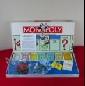

El juego de Mesa más vendido en la Historia
Antes
Un juego creado con la función de servir como herramienta para enseñar las teorias acerca de la justicia social y económica extraídas del estudio titulado Progreso y Miseria de Henry George

Monopoly
Comercializado por primera vez en el año 1936
A lo largo de 80 años, el juego ha sufrido una notable evolución. Sus múltiples ediciones y sus tantas versiones han dado pie a que se cambiara desde la caja que lo contiene hasta los elementos que lo componen. Logrando así, mantenerse como el favorito a través de las décadas
Ahora
Con los años la finalidad del juego cambió para solo disfrutar un buen rato, negociando propiedades y hasta haciendo uso de medios electrónicos para todas las transacciones que requiere el juego

Con informacíon de Gràffica.info.culturavisual